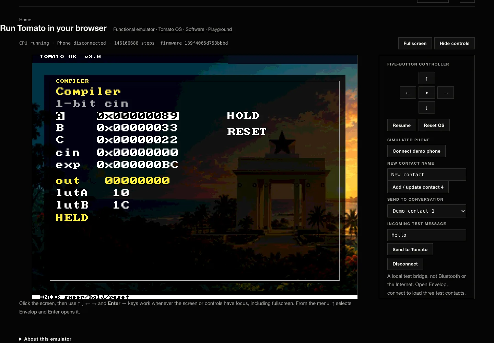

Dispatch · Tooling
Synthesis Bypass
A local preview shortens software iteration without pretending to be physical execution.
Historical entry: this page records the project at the time. Current facts and execution labels follow the status page.
Waiting for synthesis, routing, and bitstream generation made every Envelop UI change expensive. I built a local preview so Tomato OS assembly could be exercised with the same button model before making another FPGA build.
The preview is an iteration tool. It does not replace FPGA evidence: local RTL execution is labeled simulation, while the public browser implementation is a functional ISA-level emulator.
The default FPGA flow remains Yosys → nextpnr-xilinx → Project X-Ray, with an optional Linux Vivado batch target. The configured 90 MHz nextpnr value is a timing target, not Tomato’s runtime clock; the current FPGA CPU runs at 6.25 MHz.
From the build
The work behind the words.
{kind=link}

Browser emulation · generated OS image, not physical FPGA execution.
{kind=link}

Browser, backend, nearby bridge, Tomato OS, and CPU stay distinct.